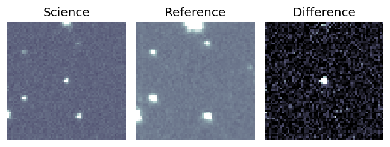
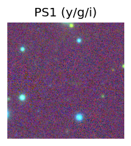
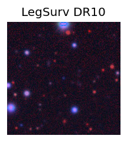
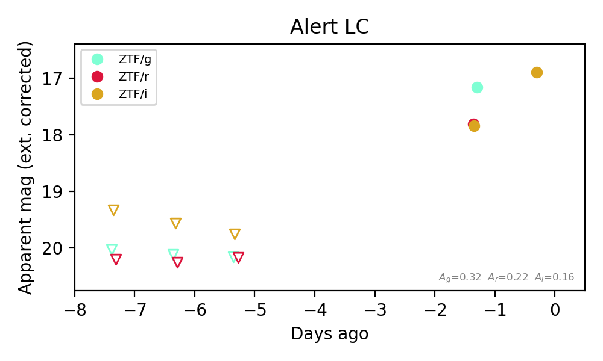
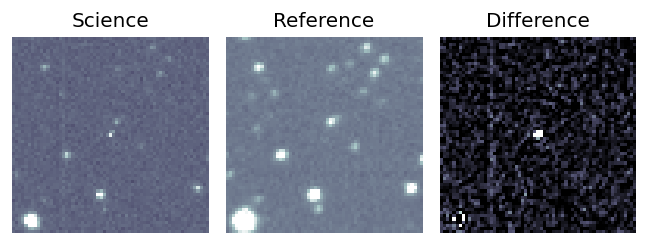
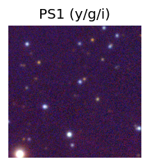
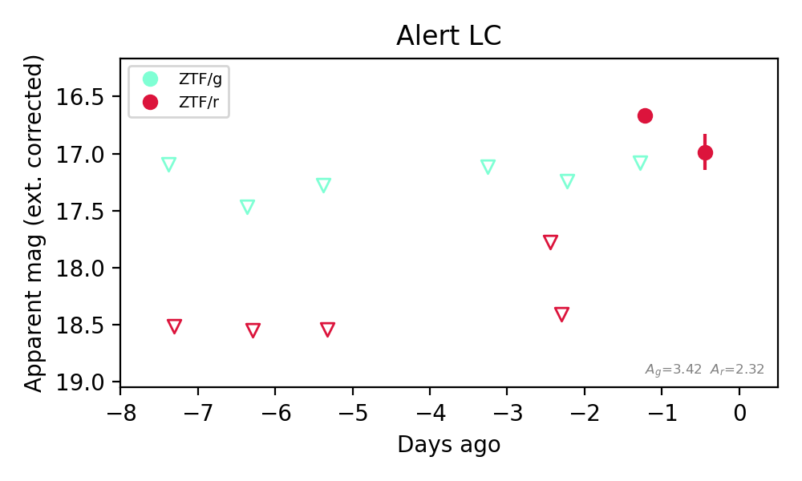
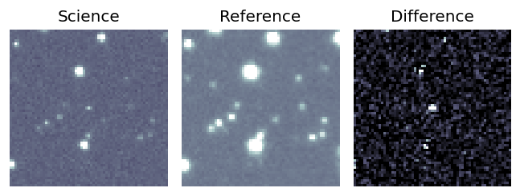
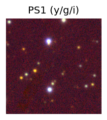
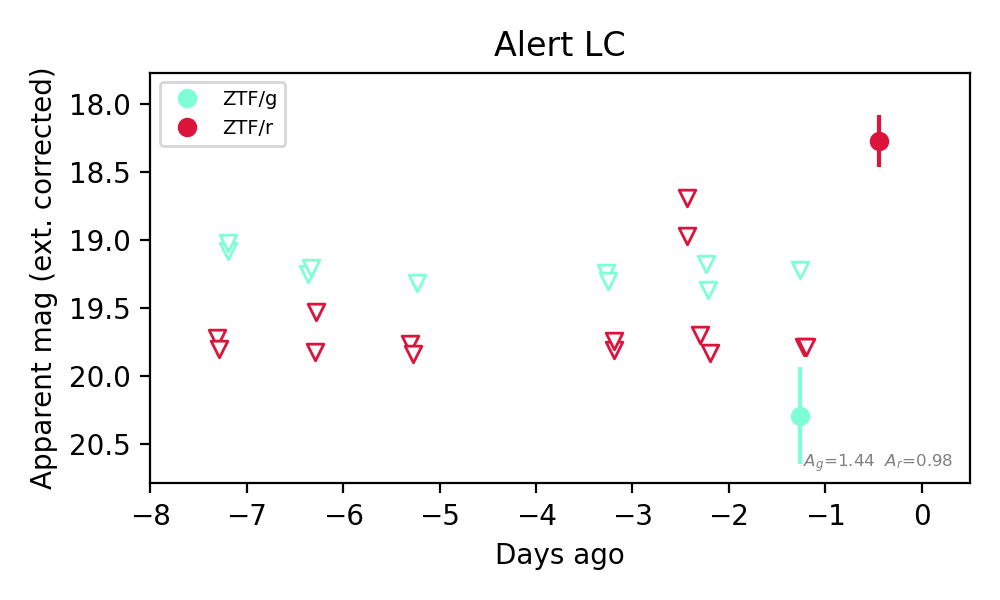

Candidate List 20260824Last night — ZTF: 1,191 passed basic cuts (53 young) · LSST: 0 passed basic cuts (0 young)Previous Day Next Day
Section 1: New Sources (age<1d) Section 2: Old (1-5d) sources observed last nightplaceholder
Section 2: Older Sources Observed Last Night (4)
0. [ZTF] ZTF26abpyrfi (FBOT?) [Back to Top] [Share] [Trigger Swift] [Fritz Alert] [Fritz Source] [Lasair]RA, Dec: 262.39078, 15.40504 17h29m33.79s, 15d24m18.15sGalactic (l, b): 38.16292, 24.90856 ext(g-r) = 0.097


TESS: Sectors [ 25 26 52 53 79 118]
PS1: 0 sources in 3 arcsec
LegacySurvey: 1 sources in 3 arcsec Closest: d = 1.31 arcsec, 182.4 deg (east of north) photoz=0.09 (68% bounds 0.08, 0.11), type=SER peak abs mag (ext. corrected) = -19.95 (68% bounds -19.55, -20.37)

Extinction-corrected gr color:
From alerts: -0.36 +/- 0.17 mag
Extinction-corrected gi color:
From alerts: -0.75 +/- 0.18 mag
Extinction-corrected ri color:
From alerts: -0.39 +/- 0.19 mag
Rise Rate:
g: 0.5 mag/day
r: 0.37 mag/day
i: 0.1 mag/day
Fade Rate:
1. [ZTF] ZTF26abqgbkd (Afterglow?) [Back to Top] [Share] [Trigger Swift] [Fritz Alert] [Fritz Source] [Lasair]RA, Dec: 312.74037, 7.65854 20h50m57.69s, 7d39m30.76sGalactic (l, b): 54.73452, -22.25115 ext(g-r) = 0.102


TESS: Sectors [55 81 82]
PS1: 0 sources in 3 arcsec
LegacySurvey: 1 sources in 3 arcsec Closest: d = 0.05 arcsec, 107.6 deg (east of north) photoz=0.97 (68% bounds 0.07, 1.75), type=PSF peak abs mag (ext. corrected) = -27.19 (68% bounds -20.8, -28.76)

Extinction-corrected gr color:
From alerts: -0.64 +/- 0.09 mag
Extinction-corrected gi color:
From alerts: -0.68 +/- 0.1 mag
Extinction-corrected ri color:
From alerts: -0.04 +/- 0.11 mag
Consistent with synchrotron, g-r>0!
Rise Rate:
g: 0.74 mag/day
r: 0.61 mag/day
i: 0.91 mag/day
Fade Rate:
2. [ZTF] ZTF26abqnaek (Afterglow?) [Back to Top] [Share] [Trigger Swift] [Fritz Alert] [Fritz Source] [Lasair]RA, Dec: 327.2834, 60.89389 21h49m8.01s, 60d53m38.02sGalactic (l, b): 102.50645, 5.47308 ext(g-r) = 1.097


TESS: Sectors [16 17 24 56 57 76 77 83 84]
PS1: 0 sources in 3 arcsec
LegacySurvey: 0 sources in 3 arcsec

Extinction-corrected gr color:
From alerts: 0.41 +/- 99 mag
Rise Rate:
r: 1.61 mag/day
Fade Rate:
r: 0.41 mag/day
3. [ZTF] ZTF26abqnarw (FBOT?) [Back to Top] [Share] [Trigger Swift] [Fritz Alert] [Fritz Source] [Lasair]RA, Dec: 350.7037, 54.12328 23h22m48.89s, 54d 7m23.80sGalactic (l, b): 110.07884, -6.52203 ext(g-r) = 0.462


TESS: Sectors [17 24 57 77 84]
SDSS (<15 kpc):Found SDSS phot-z: z=0.48; peak abs mag = -23.97
PS1: 0 sources in 3 arcsec
LegacySurvey: 0 sources in 3 arcsec

Extinction-corrected gr color:
From alerts: 0.5 +/- 99 mag
Rise Rate:
r: 2.01 mag/day
Fade Rate: